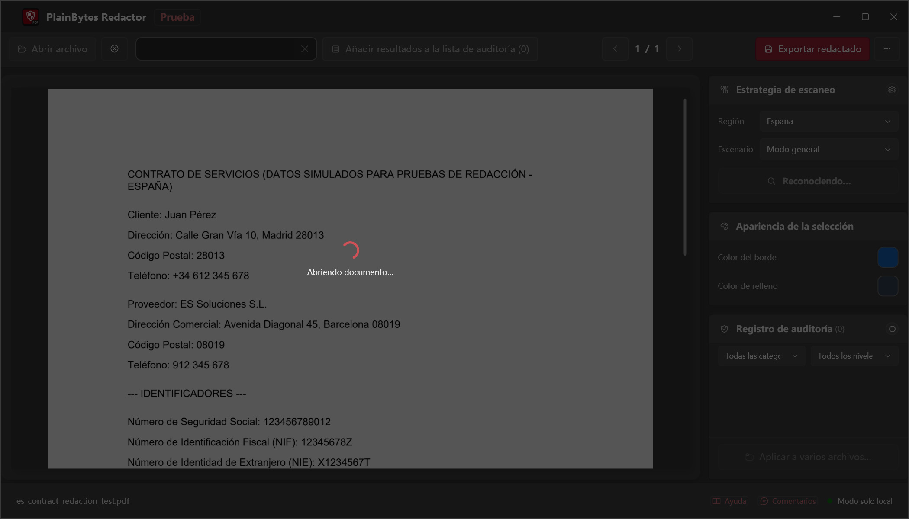
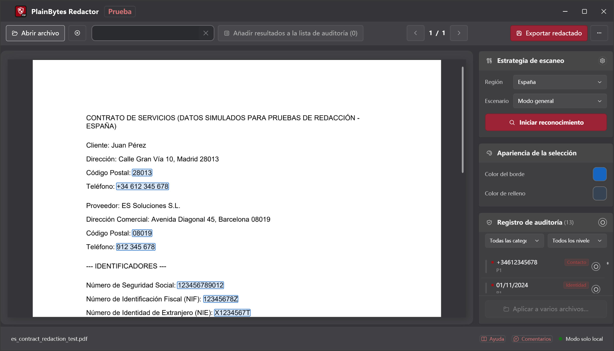
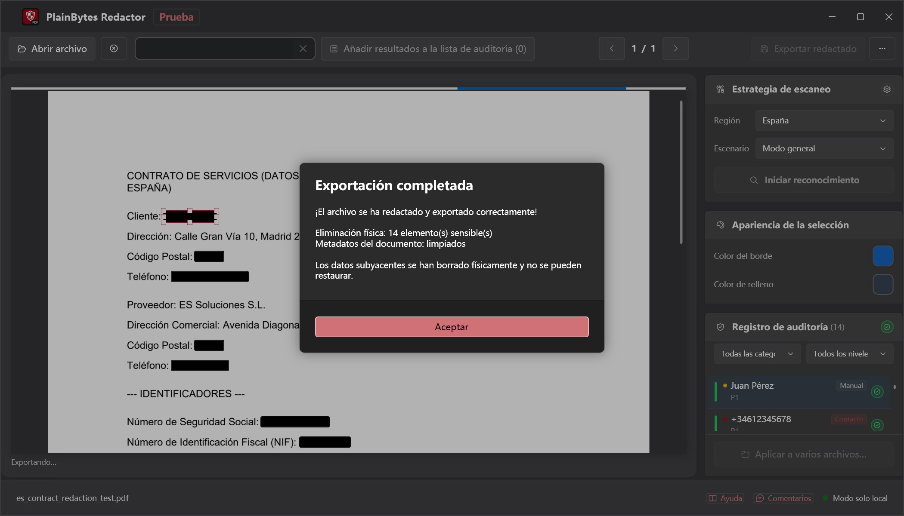

01
Abrir y analizar
Carga un PDF y ejecuta la detección para los formatos de tu región.
PlainBytes Redactor
PlainBytes Redactor funciona íntegramente en tu ordenador — sin subida a la nube, ningún servicio de IA ve tus archivos. Detección automática para formatos de identificadores de 28 países, más revisión manual antes de exportar.
Prueba gratis 10 días · Compra única · Sin suscripción
Cómo funciona

Carga un PDF y ejecuta la detección para los formatos de tu región.

Consulta cada elemento marcado con su categoría de riesgo.
Añade, elimina o afina antes de finalizar.

Contenido y metadatos eliminados permanentemente.
La mayoría de herramientas de redacción — especialmente las basadas en IA — suben tus documentos a un servidor antes de encontrar y eliminar información sensible. Para quienes están sujetos a confidencialidad, privilegio o independencia de auditoría, no debería ser un riesgo necesario solo para redactar un archivo.
PlainBytes Redactor realiza toda la detección y el procesamiento en tu dispositivo. Tus archivos nunca salen del ordenador — sin cuenta, sin sync, sin servidor.
Cumplimiento
Arquitectura local-first alineada con los principales marcos de protección de datos — sin transferencias a terceros durante el procesamiento.
Ayuda a cumplir los requisitos del artículo 17 (derecho de supresión). Los datos personales se eliminan de forma permanente del flujo de contenido del PDF — sin transferencia a terceros durante el procesamiento.
Derecho de supresiónConforme al espíritu de la Ley Orgánica de Protección de Datos y Garantía de los Derechos Digitales, supervisada por la AEPD. El procesamiento completamente local garantiza que ningún dato personal se transmita a servicios externos no autorizados.
Conformidad AEPDLa protección de datos está integrada desde el diseño del producto. El procesamiento local, la eliminación física de datos y la ausencia de dependencia de la nube corresponden al principio de «protección de datos desde el diseño» previsto en el artículo 25 del RGPD.
Protección desde el diseñoNota: PlainBytes Redactor es una herramienta diseñada para facilitar flujos de trabajo conformes con la protección de datos. No constituye asesoramiento jurídico y no se ha obtenido ninguna certificación formal por parte de terceros.
Para abogados
Redacta SSN, datos financieros y otros PII antes de e-filing o compartir discovery, sin pasar archivos de clientes por nube de terceros.
Para contadores
Redacta números de cuenta, SSN y datos financieros del cliente antes de compartir papeles de trabajo de auditoría, declaraciones fiscales o informes de fin de año — sin pasar datos del cliente por nube de terceros.
Para equipos de RR. HH.
Redacta cifras salariales, SSN y datos personales antes de compartir cartas de oferta, registros de terminación o expedientes de personal con auditores, asesores legales o en respuesta a solicitudes de datos.